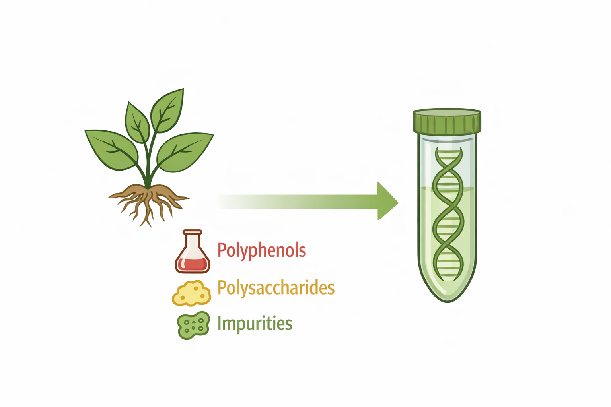
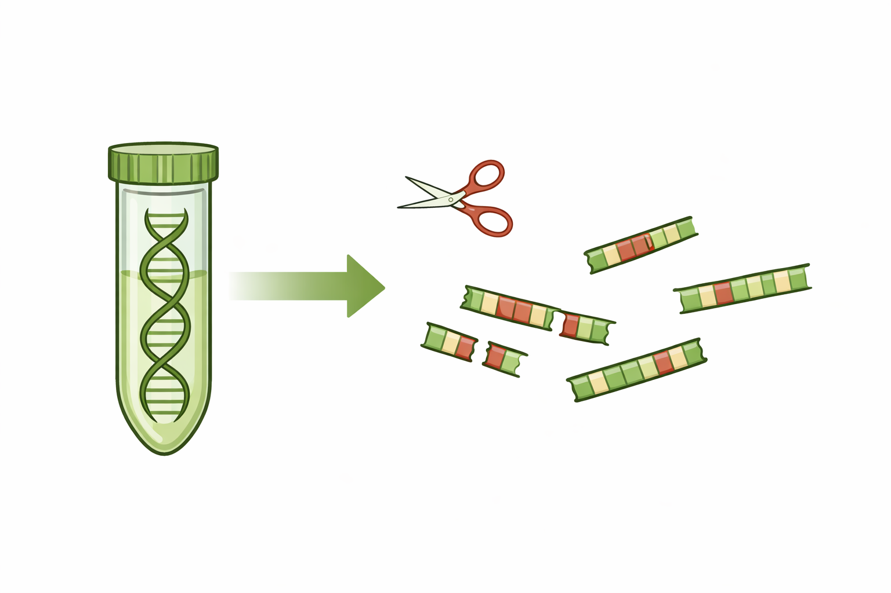
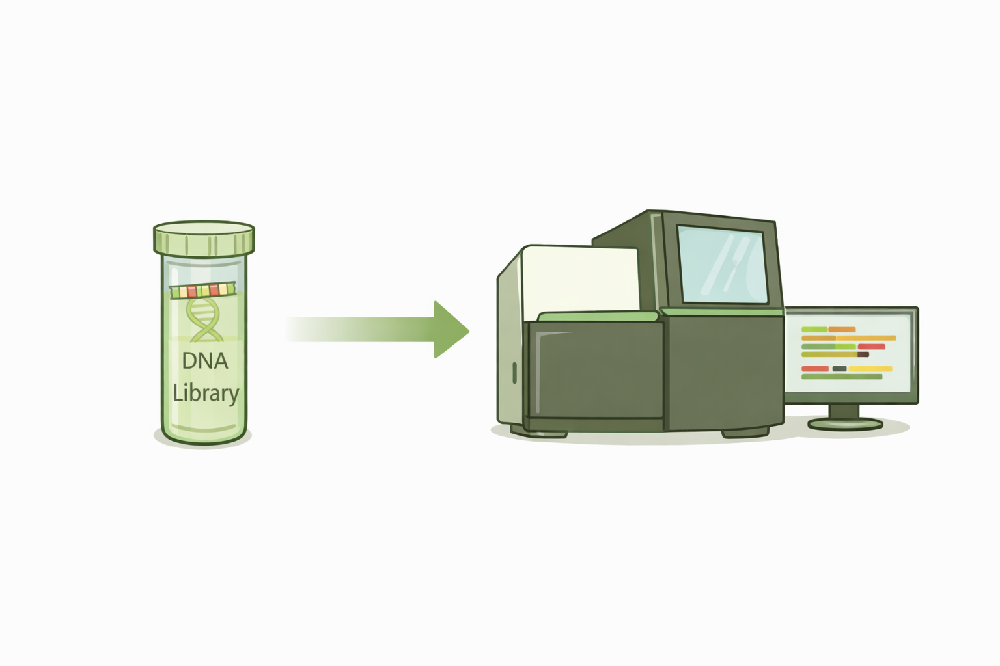

Quality Control of Sequencing Data
By the end of this module, you should be able to:
- Explain why QC of sequencing data is necessary.
- Interpret FastQC reports and their warnings.
- Decide what action (if any) to take based on QC results.
From plant tissue to sequencing reads
Before we talk about quality control, it is important to understand how sequencing data is produced. Many of the problems we detect during QC originate early in the sequencing workflow.
At a high level, the process looks like this:
Plant tissue → DNA extraction → Library preparation → Sequencing → FASTQ files
Each step can introduce technical effects that later appear in quality control reports. Let’s have a closer look:
Why do we need quality control?
When we work with sequencing data, we usually want to answer a biological question.
In plant breeding, these could for example be:
- Which genetic variants are associated with a certain trait?
- Which alleles are present in a breeding line?
- How similar are two plant populations?
- Which genes are expressed under certain conditions?
All of these questions rely on the assumption that the sequencing data reflects the real biology of the plant.
Quality control (QC) is the step where we check whether this assumption is reasonable.
As such, QC is not about making the data “look nice”. It is about making sure that technical problems do not lead to wrong biological conclusions.
What can go wrong if data quality is poor?
Sequencing errors do not stay “technical”. They can directly affect how we interpret the biology:
| Technical issue | Biological consequence |
|---|---|
| Low base quality | Identification of false SNPs |
| Adapter contamination | Detection of artificial variants |
| GC bias | Skewed allele frequency estimates |
| High duplication | Overconfidence in genotypes |
In a breeding context, this can mean that we might choose the wrong markers, miss true marker-trait associations or misjudgement or genetiv diversity.
Quality control helps us detect these problems before we trust the results.
Where do sequencing errors come from?
Sequencing errors can be introduced at several steps, long before we ever see a FASTQ file.
Step 1: DNA extraction

Plant material can be challenging to work with. Different issues can affect the quality of the reads that will be sequenced:
- Compounds such as polyphenols and polysaccharides can interfere with enzymes or make the DNA sticky.
- DNA quality can vary strongly between samples, depending on the extraction method, tissue and extractor.
Step 2: Library preparation

During library preparation, the DNA is sheared into fragments, adapters are ligated to these DNA fragments and the DNA is often amplified using PCR.
Sometimes, the DNA already degrades before the library preparation. That can lead to uneven sequencing coverage in the sequenced reads. The PCR can introduce a bias, where some fragments are amplified more than others.
All these effects are technical, but they shape the data we later analyse.
Sequencing

Sequencing run itself can introduce errors. Base calling becomes less accurate toward the end of reads and errors accumulate across sequencing cycles. Different lanes or runs can have different overall quality.
Why plant genomes are special
Many QC tools are generic. They do not “know” that your data comes from plants.
However, plant genomes often have features that affect quality:
- Large genome sizes
- High repeat content
- Polyploidy
- High heterozygosity
- Variable GC content between species
As a result, the GC content plots may look unusual even for good data. High duplication levels are not always a technical problem. So, some warnings are expected and acceptable.
This means that QC results must always be interpreted in a biological context.
Quality control tools can show you what looks unusual — you need biological knowledge to decide why.
What is FastQC?
After sequencing, the first files we usually receive are FASTQ files. These files contain millions of short sequencing reads together with a quality score for every base.
Looking directly at raw FASTQ files is not practical.
FastQC is a tool for quality control on raw sequence data coming from high throughput sequencing. It takes your raw data and performs a series of standardized tests, and produces an easy-to-read overview report with figures and tables for each sample.
FastQC provides information about your samples, it does not know what experiment you performed, or what you plan to do with your data afterwards. Thus, the interpretation and decisions are up to you. After checking the quality you might want to use other tools to correct errors, remove low-quality data, etc.
Interpreting FastQC flags
Each FastQC module ends with a simple label: pass, warning, or fail. These labels are often misunderstood. A fail does not mean the data is unusable. Alternatively, a pass does not mean the data is perfect.
The flags are based on generic thresholds that work reasonably well across many datasets, but they are not tailored to specific organisms or analyses. In plant breeding projects, it is common to see warnings or failures even in perfectly usable datasets.
FastQC flags should therefore be treated as signals to investigate, not as automatic decisions.
A FastQC report
The following is adapted from the excellent FastQC tutorial at Babraham Bioinformatics.
Basic statistics

Simple summary statistics for the file that was analyzed. Good to check what sample was used, and to get initial stats on the sample. This section will never raise warnings.
Per base sequence quality

This plot shows the quality score at each position in the read. The higher the score, the better the base call.
This plot answers a simple question: How confident are we in the base calls along the read?
In most sequencing datasets, quality is highest at the beginning of the read and decreases toward the end. This pattern is normal and expected, a modest drop in quality at the end of reads is usually not a serious problem.
However, the sample can be problematic when:
- Quality drops very sharply.
- Large parts of the read have very low scores.
- Quality varies strongly between samples.
Per Sequence Quality Scores

While the previous plot looks at quality per position, this plot looks at quality per read.
It allows you to see if a subset of your sequences have low quality values, or if the quality is homogeneous across the reads of your sample.
The low quality reads should obviously only represent a small percentage of the total sequences. If a significant proportion of the sequences are of low quality there could be some kind of systematic problem.
In plant breeding data, poor per-sequence quality can indicate issues such as:
- Problems during library preparation.
- Technical issues during sequencing.
- Low-quality starting material.
Per Base Sequence Content

This module shows the proportion of the bases - A, C, G, and T - at each position in the read. For random genomic DNA, these proportions should be relatively stable across the read length.
Some types of library will always produce biased sequence composition, normally at the start of the read. Not every deviation from equal base content is a problem. The key question is whether the pattern is expected given the experiment.
Per Sequence GC Content

The GC content plot shows the overall GC distribution of reads in the sample. FastQC compares the observed distribution to a theoretical expectation, and can help identify contamination.
The expectation is a roughly normal distribution of GC content where the peak represents the overall GC content of the underlying genome. However, the acutal shape of the curve depends highly on your sample.
In plant datasets, unusual GC content does not automatically mean contamination, it can vary naturally between regions, which can influence this plot.
Unexpected GC content can be caused by:
- Genome composition
- Repetitive regions
- Targeted sequencing approaches
This plot becomes more informative when comparing samples to each other, rather than judging a single sample in isolation.
Per Base N Content

If a sequencer is unable to make a base call with sufficient confidence it will call an “N” rather than a conventional base.
It is not unusual to see a very low proportion of Ns appearing in a sequence, especially closer to the end of a sequence.
Sequence length distribution

A graph showing the distribution of fragment sizes in the file which was analysed. Here, you can see a sample with many short, and a few very long reads.
Some high throughput sequencers generate sequence fragments of uniform length (Illumina), but others can contain reads of varying lengths (PacBio, NanoPore).
Sequence Duplication Levels

This plot shows how often identical sequences occur in the data. In a diverse library most sequences will occur only once in the final set, so most sequences should fall into the far left of the plot
High duplication can arise from:
- PCR amplification bias.
- Low library complexity.
- Very deep sequencing.
In plant breeding data, duplication is not always technical. Highly conserved or repetitive regions can also produce high duplication levels.
Interpretation depends strongly on the type of experiment and the genome being studied.
Overrepresented sequences

FastQC also identifies sequences that occur much more often than expected. A normal high-throughput library will contain a diverse set of sequences, with no individual sequence making up a substantial fraction of the whole.
Overrepresented sequences might be biologically significant, or indicate that the library is contaminated, or simply not as diverse as expected. They can be adapter fragments, primers or highly repetitive genomic regions.
This module is often useful for diagnosing specific technical issues, especially when combined with adapter content and duplication plots.
optional: Kmer content

The k-mer content module looks for short sequence motifs that occur more often than expected in the reads.
A k-mer is simply a short DNA sequence of length k.
For example, if k = 7, a k-mer could be something like ATCGTGA. Fixed size kmers can also be called after their number: 3-mer, 7-mer etc.
FastQC scans the reads and checks whether certain k-mers are strongly enriched at specific positions along the read. In random genomic sequencing data, short sequence motifs should be more or less evenly distributed, so that is the basic assumption of FastQC.
This module measures the number of each 5-mer (default, but adjustable) at each position in your library and then looks for significant deviations from an even coverage at all positions. Any k-mers with positionally biased enrichment are reported. The top 6 most biased Kmer are additionally plotted to show their distribution.
When FastQC detects a strong enrichment of specific k-mers, this often indicates that something systematic is present in the data. Enrichment at the start or end of reads is especially common and often points to technical sequences rather than biological signal.
Common causes include:
- Adapter or primer sequences.
- Library preparation artefacts.
- Technical biases introduced during sequencing.
To save resources and time, only a random 2% of the sample is analysed. Results are then extrapolated to the rest of the library.
Adapter content

This module will detect adapter content and plot it together with the identity of the adapter.
Good to know if you have adapter contamination, and which ones you might have to remove from the data.
How FastQC fits into a larger workflow
FastQC is usually used at least twice:
- Once on raw data
- Again after trimming or filtering
Comparing FastQC reports before and after processing helps you evaluate whether your actions improved the data.
FastQC is therefore not a one-time checkpoint, but part of an iterative process.
Your turn: a real FastQC report
So, now let’s have a look at some actual FastQC reports. Pick one of the below reports, take half an hour (with a partner if you have one at hand) and try to understand what is going on. Keep in mind what sort of data you are working with.
Remember, most often, there is no single “correct” answer. What matters is whether your interpretation is biologically and technically justified.
Here are some guiding questions for you:
- Depending on your sample, which modules would you look at first, and why?
- How does read quality change along the length of the reads? Is the quality along the sample problematic, or acceptable?
- Is there evidence of adapter contamination or overrepresented sequences?
- Based on this report, would you: i) Use the data as is? ii) Apply trimming or filtering? iii) Be concerned about the sample and investigate further?
- Are there any FastQC warnings you would ignore for this dataset? Why are they acceptable in this context?
- If you had three samples and only this one looked different, what would you want to check next?
Report 1: RNA-sequencing data short read data - remember that RNA sequencing does not look at the whole genome.
Report 2: PacBio Data, long read data - see how different this type of data looks like in the FastQC report.
Report 3: bad sample data short read data - can you figure out what happened to this sample?
Here is a very nice and thorough tutorial on assessing quality of short and long read sequencing data. Great to have a look at the difference the sequencing technology can make!
After quality control: what comes next?
After working through real FastQC reports, one important point should be clear: Quality control is not about deciding whether data is “good” or “bad”. It is about deciding what to do next.
Sequencing data almost always contains imperfections. The goal of QC is to understand whether these imperfections matter for your biological question, and how they should be handled.
Acting on QC results
Once you have interpreted a FastQC report, there are usually three possible outcomes.
In some cases, the data can be used as it is. Minor warnings or expected patterns do not necessarily require any action, especially if they are unlikely to affect downstream analyses.
In other cases, simple processing steps are appropriate. This often includes trimming adapters or low-quality read ends. After such processing, QC should be repeated to confirm that the data has improved.
In a small number of cases, QC reveals serious problems. These may require investigating sample preparation, resequencing, or excluding a sample from further analysis.
At the beginning it might be a lot to go through the reports and judge the samples, but with time and practice it will come more natural to you.
QC as part of a reproducible workflow
Quality control should not be an informal or invisible step.
Good practice includes running QC in a consistent way across all samples, recording which issues were observed and documenting which actions were taken, and why.
This is especially important in plant breeding projects, where results may influence long-term decisions.
Clear QC reporting makes analyses more transparent and easier to reproduce.
Bonus: MultiQC
So far, we have focused on one FastQC report at a time. In real projects, especially in plant breeding, we usually work with many samples.
When dozens or hundreds of samples are sequenced, it becomes tedious to interpret QC results sample by sample. This is where MultiQC is useful because is collects reports from many samples and condenses them into a single report.
That way you can compare samples side by side, spot outliers quickly, and identify systematic problems across samples.